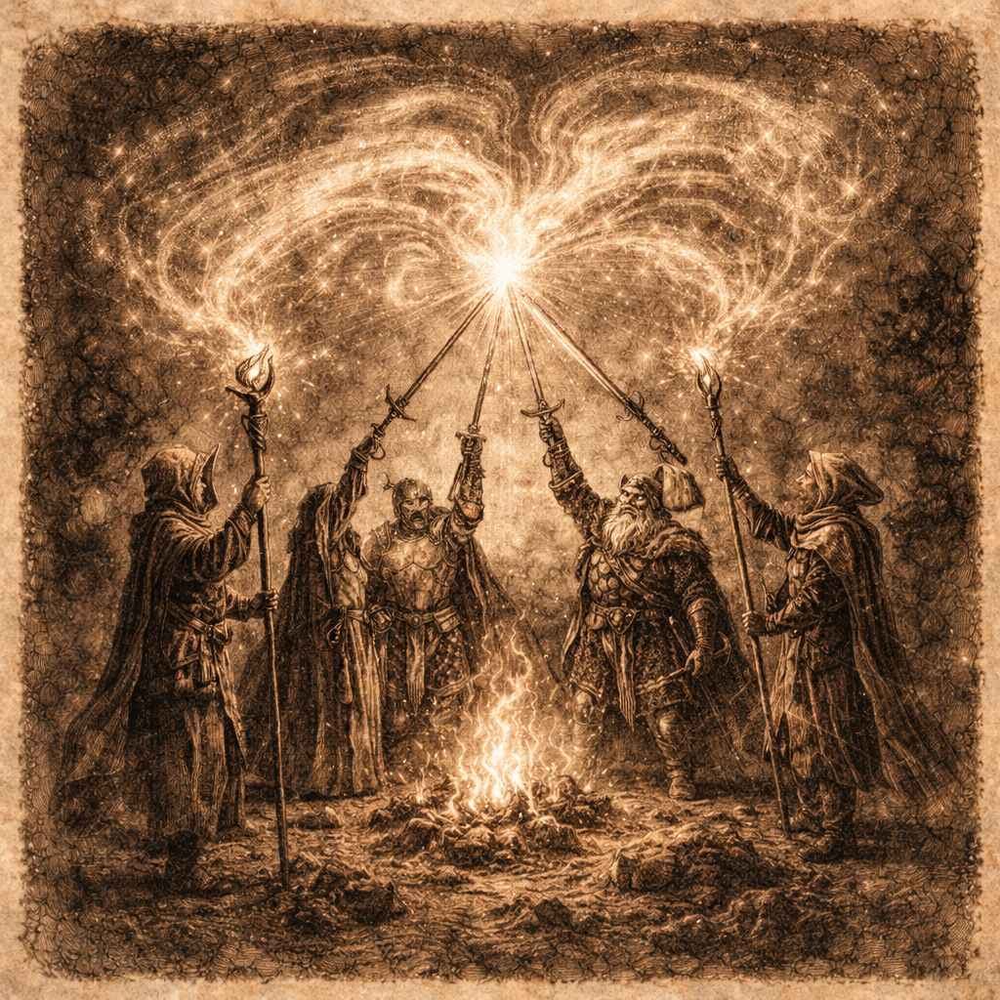

第7章 アジャイルという名の冒険パーティ——開発プロセス

この章で手に入れる力
ここまでの旅で、あなたは要求を聴き取り、設計し、実装し、テストで守り、磨き上げ、本番環境へ送り出す力を身につけました。一人の冒険者として、十分な実力を備えたと言えるでしょう。
しかし、現実のソフトウェア開発は、一人では完結しません。仲間と共に走り、互いの強みを活かし、チームとして価値を生み出す——そこに新たな喜びと、一人では到達できない高みがあります。
この章では、アジャイル開発の心臓部であるスクラムのリズム、Gitを使ったコードの知の交流、そしてペアプログラミングやモブプログラミングによるリアルタイムの「思考の同期」を学びます。冒険パーティを組み、オーケストラのように調和しながら、チームの力を最大限に引き出しましょう。
冒険の地図

読了後のあなた
この章を読み終えると、あなたは以下のことができるようになります。
- リズムを刻む: スプリントとセレモニーで、チーム開発にリズムと祝祭を生み出せる
- 交流する: プルリクエストとコードレビューで、互いの知恵をコードに込められる
- 共鳴する: ペアプログラミングで、一人では思いつかない発想をリアルタイムに引き出せる
- 調和する: チーム全体でモブプログラミングを実践し、知識の属人化を解消できる
一人の冒険者から、最強の冒険パーティへ。仲間と共に、新たなステージへ踏み出しましょう。
さらに学ぶためのリソース（章全体）
- 📚 書籍: Ken Schwaber, Jeff Sutherland『スクラムガイド』（スクラムの公式定義）
- 📚 書籍: Henrik Kniberg『Scrum and XP from the Trenches』（スクラム実践の体験記）
- 📚 書籍: Scott Chacon, Ben Straub『Pro Git 第2版』（Gitの包括的ガイド）
- 📚 書籍: Dave Thomas, Andy Hunt『達人プログラマー 第2版』（ペアプログラミングを含む開発者の知恵）
- 📚 書籍: Woody Zuill, Kevin Meadows『Mob Programming』（モブプログラミングの実践手法）